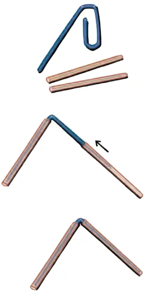
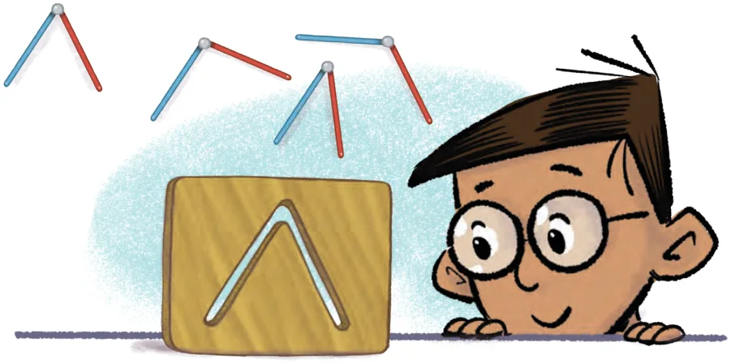
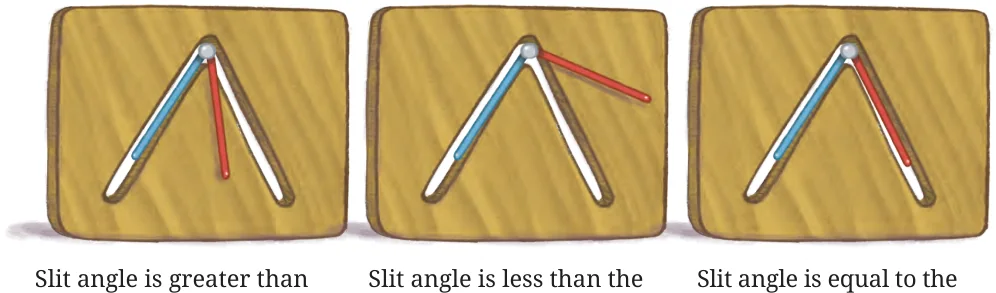
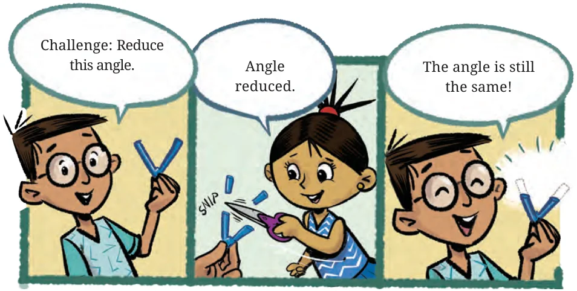

<!DOCTYPE html>
<html lang="en">
<head>
<meta charset="UTF-8">
<meta name="viewport" content="width=device-width,initial-scale=1">
<title>2.7 Making Rotating Arms — Lines and Angles</title>
<meta name="description" content="Class 6 Mathematics · Lines and Angles · 2.7 Making Rotating Arms">
<link rel="icon" href="data:image/svg+xml,<svg xmlns='http://www.w3.org/2000/svg' viewBox='0 0 100 100'><text y='.9em' font-size='90'>📘</text></svg>">
<link rel="stylesheet" href="../../../assets/book.css">
<link rel="stylesheet" href="https://cdn.jsdelivr.net/npm/katex@0.16.11/dist/katex.min.css" crossorigin="anonymous">
</head>
<body>
<header class="topbar">
<div class="topbar-in">
  <div class="crumb">
    <span class="c1"><a href="../../../index.html">Library</a> · <a href="../../index.html">Class 6 Mathematics</a></span>
    <span class="c2">Lines and Angles · 2.7 Making Rotating Arms</span>
  </div>
  <a class="tb-btn" data-nav="prev" href="../../02-lines-and-angles/09-figure-it-out/index.html" title="Figure it Out">←</a>
  <details class="drawer"><summary class="tb-btn" title="Sections in this chapter">☰</summary>
<div class="drawer-panel"><div class="dh">Lines and Angles</div><a href="../01-chapter-opener/index.html">Chapter opener; 2.1 Point</a><a href="../02-line-segment-2.2/index.html">2.2 Line Segment</a><a href="../03-line-2.3/index.html">2.3 Line</a><a href="../04-ray-2.4/index.html">2.4 Ray</a><a href="../05-figure-it-out/index.html">Figure it Out</a><a href="../06-angle-d-2.5/index.html">2.5 Angle D</a><a href="../07-figure-it-out/index.html">Figure it Out</a><a href="../08-comparing-angles-2.6/index.html">2.6 Comparing Angles</a><a href="../09-figure-it-out/index.html">Figure it Out</a><a href="../10-making-rotating-arms-2.7/index.html" aria-current="page">2.7 Making Rotating Arms</a><a href="../11-special-types-of-angles-2.8/index.html">2.8 Special Types of Angles</a><a href="../12-figure-it-out/index.html">Figure it Out</a><a href="../13-figure-it-out/index.html">Figure it Out</a><a href="../14-measuring-angles-2.9/index.html">2.9 Measuring Angles</a><a href="../15-degree-measures-of-different-angles/index.html">Degree measures of different angles</a><a href="../16-unlabelled-protractor/index.html">Unlabelled protractor</a><a href="../17-figure-it-out/index.html">Figure it Out</a><a href="../18-labelled-protractor/index.html">Labelled protractor</a><a href="../19-figure-it-out/index.html">Figure it Out</a><a href="../20-figure-it-out/index.html">Figure it Out</a><a href="../21-drawing-angles-2.10/index.html">2.10 Drawing Angles</a><a href="../22-figure-it-out/index.html">Figure it Out</a><a href="../23-types-of-angles-and-their-measures-2.11/index.html">2.11 Types of Angles and their Measures</a><a href="../24-figure-it-out/index.html">Figure it Out</a><a href="../25-figure-it-out/index.html">Figure it Out</a><a href="../26-summary/index.html">Summary</a><a href="../27-solutions/index.html">CHAPTER 2 — SOLUTIONS</a></div></details>
  <a class="tb-btn" data-nav="next" href="../../02-lines-and-angles/11-special-types-of-angles-2.8/index.html" title="2.8 Special Types of Angles">→</a>
  <button class="tb-btn" data-theme-toggle title="Toggle light / dark" aria-label="Toggle light or dark theme">◐</button>
</div>
<div class="progress"><span style="width:12.4%"></span></div>
</header>
<main class="wrap">
<div class="sec-head">
  <p class="eyebrow"><a href="../index.html">Chapter 2 · Lines and Angles</a></p>
  <h1>2.7 Making Rotating Arms</h1>
  <p class="sec-meta">Textbook pages 13–15 · 4 figures</p>
</div>
<article class="prose">
<p>Let us make ‘rotating arms’ using two paper straws and a paper clip by following these steps:</p>
<figure class="fig side-fig"></figure>
<ol>
<li>Take two paper straws and a paper clip. </li>
<li>Insert the straws into the arms of the paper clip.</li>

<li>Your rotating arm is ready!</li>
</ol>
<p>Make several ‘rotating arms’ with different angles between the arms. Arrange the angles you have made from smallest to largest by comparing and using superimposition.</p>
<p>Passing through a slit: Collect a number of rotating arms with different angles; do not rotate any of the rotating arms during this activity.</p>
<p>Take a cardboard and make an angle-shaped slit as shown below by tracing and cutting out the shape of one of the rotating arms.</p>
<figure class="fig wide"></figure>
<p>Now, shuffle and mix up all the rotating arms. Can you identify which of the rotating arms will pass through the slit? The correct one can be found by placing each of the rotating arms over the slit. Let us do this for some of the rotating arms:</p>
<figure class="fig wide"></figure>
<p>the arms’ angle. The arms arms’ angle. The arms arms’ angle. The arms will will not go through the will not go through the go through the slit. slit. slit.</p>
<p>Only the pair of rotating arms where the angle is equal to that of the slit passes through the slit. Note that the possibility of passing through the slit depends only on the angle between the rotating arms and not on their lengths (as long as they are shorter than the length of the slit).</p>
<figure class="fig wide"></figure>
</article>
<nav class="pager"><a class="" data-nav="prev" href="../../02-lines-and-angles/09-figure-it-out/index.html"><span class="dir">← Previous</span><span class="t">Figure it Out</span><span class="ch">Lines and Angles</span></a><a class="nx" data-nav="next" href="../../02-lines-and-angles/11-special-types-of-angles-2.8/index.html"><span class="dir">Next →</span><span class="t">2.8 Special Types of Angles</span><span class="ch">Lines and Angles</span></a></nav>
</main><footer class="site">Generated from the source textbook PDFs · text, figures and exercises belong to their respective publishers.</footer><script defer src="https://cdn.jsdelivr.net/npm/katex@0.16.11/dist/katex.min.js" crossorigin="anonymous"></script>
<script defer src="https://cdn.jsdelivr.net/npm/katex@0.16.11/dist/contrib/auto-render.min.js" crossorigin="anonymous"
  onload="renderMathInElement(document.body,{delimiters:[
    {left:'\\(',right:'\\)',display:false},
    {left:'$$',right:'$$',display:true},
    {left:'\\[',right:'\\]',display:true}],throwOnError:false,ignoredTags:['script','noscript','style','textarea','pre','code']})"></script>
<script src="../../../assets/book.js"></script>
<script defer src="../../../../assets/search.js?v=1789782771"></script>
<script defer src="../../../../assets/screenshot.js?v=2"></script>
</body>
</html>
